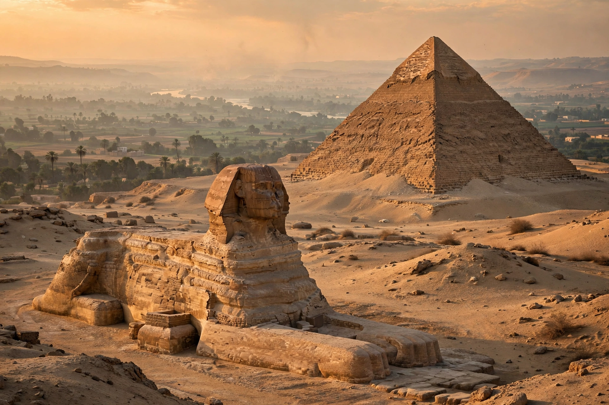

From Wikipedia, the free encyclopedia
| Ancient Egypt | |
|---|---|
 | |
| Period | c. 3100 BC – 30 BC |
| Capital | Memphis, Thebes, and others (varied by period) |
| Language | Ancient Egyptian (hieroglyphs, hieratic, demotic) |
| Religion | Ancient Egyptian religion (polytheistic) |
Ancient Egypt was a civilisation of ancient Northeast Africa, concentrated along the lower reaches of the Nile River, situated in the place that is now the country of Egypt. It is one of history's earliest and longest-lasting civilisations, unified around 3100 BC under the first pharaoh and enduring, with interruptions, until the Roman conquest in 30 BC.
Egyptian history is conventionally divided into the Old Kingdom (the age of the pyramids at Giza), the Middle Kingdom, and the New Kingdom, separated by Intermediate Periods of fragmentation. The New Kingdom empire (c. 1550–1070 BC) reached its greatest extent under Thutmose III and Ramesses II, controlling territory from Nubia to the Euphrates. Subsequent millennia saw rule by Libyan, Nubian, Assyrian, and Persian powers before Alexander the Great's conquest and the Ptolemaic dynasty, ending with the death of Cleopatra VII.
The annual flooding of the Nile, predictable and enriching, supported intensive agriculture and a centralised state. Egyptians developed a writing system (hieroglyphs), advanced mathematics and medicine, monumental architecture in stone, and a complex religion centred on gods such as Ra, Osiris, and Isis, with elaborate beliefs about the afterlife that produced mummification and great royal tombs in the Valley of the Kings.
The decipherment of hieroglyphs using the Rosetta Stone by Jean-François Champollion in the 1820s reopened Egypt's written record. Egyptology remains a major field, and ancient Egyptian art, architecture, and mythology continue to hold a central place in world culture.
Categories: Ancient Egypt | Ancient history | Civilisations